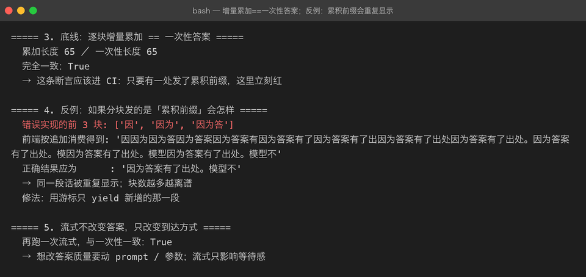

Project 03 — Chapter 04：Streaming【流式输出】
状态：✅ 已校对 对应代码：
src/assistant/client.py（astream）、src/assistant/api.py（/chat/stream）
1. 项目要增加什么能力
现在的调用是「憋大招」：
reply = await client.chat(messages) # 等 8 秒，一次拿到全部
print(reply)用户视角：点了发送 → 白屏 8 秒 → 一整段文字突然出现。
本章目标：
让文字一个字一个字地出现（打字机效果），把「等待 8 秒」变成「0.4 秒后开始有反馈」。
2. 为什么需要这个知识
这不是锦上添花，是感知性能的质变：
非流式： TTFB 8s ────────────────► 全部内容
流式： TTFB 0.4s ► 持续吐字 ────► 全部内容总时间一样，但用户的感受完全不同。ChatGPT 之所以「感觉很快」，很大一部分功劳在流式。
第二个理由更实际：长回答可能被 max_tokens 截断或中途超时，流式至少能把已经生成的部分给用户。
3. 核心概念
3.1 底层：SSE（Server-Sent Events）
SSE 就是一个约定格式的 HTTP 响应：
Content-Type: text/event-stream
Cache-Control: no-cache报文体：
data: {"delta": "你"}
data: {"delta": "好"}
data: [DONE]
三条规则：
1. 每个事件以 data: 开头，以空行（\n\n）结束
2. 一个 data 里必须是合法 JSON（多行要用多个 data 行）
3. 用一个约定的结束标记收尾（OpenAI 系是 data: [DONE]）3.2 服务端怎么吐
async def astream(self, messages: list[dict]) -> AsyncIterator[str]:
payload = {"model": self._settings.model, "messages": messages, "stream": True}
async with self._client.stream("POST", url, json=payload, headers=headers) as resp:
resp.raise_for_status()
async for line in resp.aiter_lines():
if not line.startswith("data:"):
continue
data = line[5:].strip()
if data == "[DONE]":
break
chunk = json.loads(data)
delta = chunk["choices"][0]["delta"].get("content")
if delta:
yield deltaFastAPI 侧：
@router.post("/chat/stream")
async def chat_stream(req: ChatRequest, request: Request):
service = get_service(request)
async def gen():
async for delta in service.astream(req.message):
yield f"data: {json.dumps({'delta': delta}, ensure_ascii=False)}\n\n"
yield "data: [DONE]\n\n"
return StreamingResponse(gen(), media_type="text/event-stream")3.3 消费端（浏览器）
EventSource 只能发 GET。要 POST（携带长消息体）就得用 fetch + ReadableStream：
const res = await fetch("/chat/stream", {
method: "POST",
headers: {"Content-Type": "application/json"},
body: JSON.stringify({message: "你好"}),
});
const reader = res.body.getReader();
const decoder = new TextDecoder();
while (true) {
const {done, value} = await reader.read();
if (done) break;
const text = decoder.decode(value, {stream: true});
for (const line of text.split("\n\n")) {
if (!line.startsWith("data: ")) continue;
const data = line.slice(6);
if (data === "[DONE]") return;
appendChunk(JSON.parse(data).delta);
}
}注意 decoder.decode(value, {stream: true})：一个 chunk 可能在多字节的中文字符中间断开，不加 stream: true 会出现乱码。
3.4 流式的两个硬约束
1. 一旦开始吐字，HTTP 状态码就已经发出去了
→ 中途出错不能改成 500，只能在流里发一个 error 事件，前端自己处理
2. 已经吐出去的没法收回
→ 中途发现内容违规时只能截断，不能"撤销"所以协议里要预留错误事件：
data: {"error": "上游超时", "code": "upstream_timeout"}
data: [DONE]4. 项目代码
src/assistant/
├── client.py # astream()：httpx 的 stream + aiter_lines 解析 SSE
├── service.py # astream()：业务层只转发 delta，结束时补一条 assistant 消息
└── api.py # /chat/stream —— StreamingResponse + [DONE]一个容易漏的点：流式结束后要把完整内容补进 Conversation。
async def astream(self, text: str):
buf: list[str] = []
async for delta in self._client.astream(self._conversation.to_messages_with(text)):
buf.append(delta)
yield delta
self._conversation.add_user(text)
self._conversation.add_assistant("".join(buf)) # ← 别漏漏了这一句，下一轮对话就会「失忆」——而且只在流式模式下失忆，非流式正常，非常难查。
5. Java ↔ Python 对比
| Java | Python | 说明 |
|---|---|---|
Spring SseEmitter | FastAPI StreamingResponse | 同 |
WebFlux Flux<String> | AsyncIterator[str] | 都是异步序列 |
Flux.map() | async for + yield | 生成器 ≈ 响应式流 |
| Reactor 背压 | await 天然背压 | Python 消费者不消费就不拉取 |
MediaType.TEXT_EVENT_STREAM | media_type="text/event-stream" | 同 |
| OkHttp 流式响应体 | httpx client.stream() | 同 |
CharsetDecoder 处理截断 | TextDecoder(stream: true) | 中文截断乱码是同一个坑 |
6. 常见坑
坑 1：Nginx / 网关缓冲了响应
症状：本地开发流式正常，上线后变成卡 8 秒一次性出来。
原因：反向代理默认会缓冲上游响应。
proxy_buffering off;
proxy_read_timeout 300s;
gzip off; # gzip 也会缓冲坑 2：忘了 flush
Python 侧用 yield 通常没问题，但如果中间套了自定义 buffer（比如手动拼字符串再发），就会退化成非流式。
坑 3：中文乱码
decoder.decode(value) // ❌ 可能乱码
decoder.decode(value, {stream: true}) // ✅服务端也一样：读取 SSE 行时如果按字节切，可能切在多字节字符中间。
坑 4：EventSource 发不了 POST
标准的 EventSource API 只支持 GET。带历史消息的请求体太大，不能放 URL 里——用 fetch + ReadableStream（见 3.3），或者拆成「先 POST 创建会话，再 GET 订阅」。
坑 5：流式 + 结构化输出天然冲突
流式是「半个 JSON 也要显示」，结构化是「必须完整才能 json.loads」。
解法：
界面上流式展示原始文本（给用户看）
同时后台缓冲完整字符串，流结束后再一次性 parse（给程序用）两者并存，不要试图边流边 parse。
坑 6：客户端断开后服务端还在烧钱
用户关了页面，服务端还在等模型吐完。要用请求级取消：asyncio.CancelledError 捕获后关闭上游连接。
7. 实战挑战
挑战 1：给 /chat/stream 加一个错误事件格式，上游失败时发 {"error": ...} 而不是静默断流。
挑战 2：实现一个命令行流式效果——--stream 时逐字打印，并统计首字延迟（TTFB）与总耗时。
挑战 3（进阶）：流式 + 结构化并存：界面流式展示，流结束后用 Chapter 03 的 structured() 解析完整内容；解析失败时提示用户「内容不完整」。
8. 主动回忆
- SSE 报文的三条格式规则是什么？
- 为什么流式能改善体验，但总耗时不变？
- 流式结束后要补做什么，漏了会有什么症状？
- 为什么
EventSource不够用，要用fetch+ReadableStream？ - 中文乱码的根因是什么？怎么修？
- 流式和结构化输出为什么冲突？怎么共存？
9. 本节完成标准
- [ ]
--stream命令行能看到逐字输出，并打印首字延迟 - [ ]
/chat/stream返回text/event-stream，以data: [DONE]收尾 - [ ] 流式结束后完整内容已回灌进 Conversation（下一轮不失忆）
- [ ] 上游出错时流里能发出 error 事件
- [ ] 用
curl -N实测过（-N关闭 curl 自己的缓冲）
上一章：03-structured-output.md 下一章：05-conversation-memory.md —— 历史越来越长怎么办。
真实运行
流式路径（ai-app "..." --stream），token 边生成边打印，呈现「打字机」效果：

